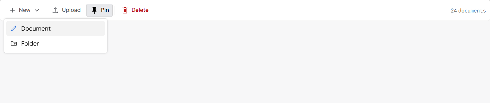
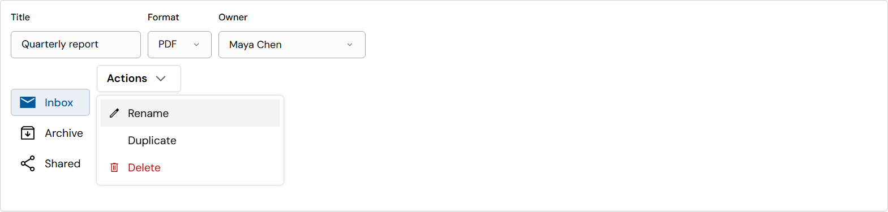

The command bar look: before and after
Your choice from the study (2026-10-24): “4px frame and items, neutral hover, the icon turns blue on hover”. Photographed at 150% screen scale, with the first menu item hovered.
What changes
- The command bar’s frame has 4px corners (it was 8px, over your 2–6px limit).
- Menu items have their own 4px corners (they were square). This applies to every menu: command bar menus, the More menu, split buttons, quick filters.
- A hovered or focused menu item’s icon turns blue. Red items (Delete) and disabled items keep their own color.
- Already in 0.70.0 and unchanged here: the neutral gray hover, the blue icon on hovered bar buttons, gray “on” toggles (Pin).
A command bar with its menu open

A menu on its own
